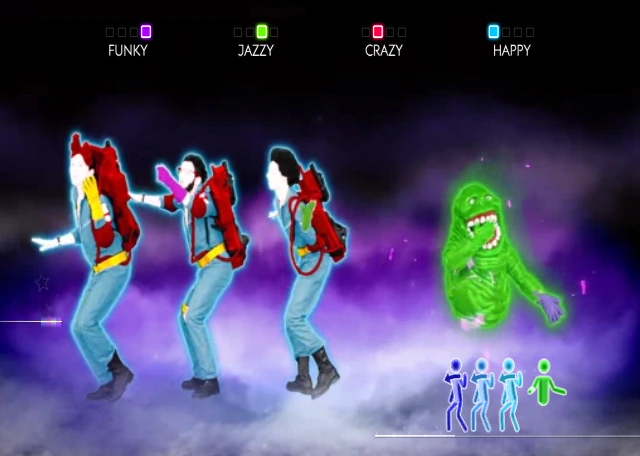
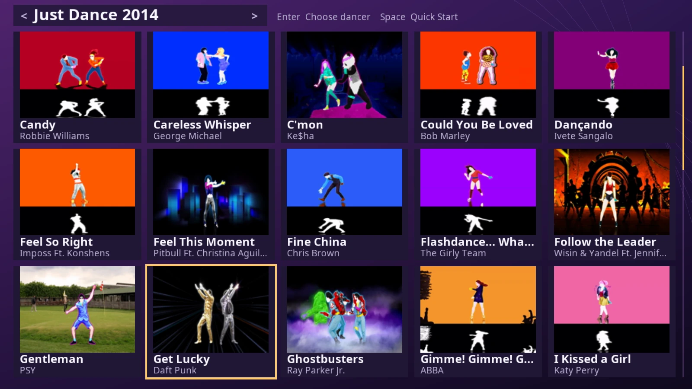
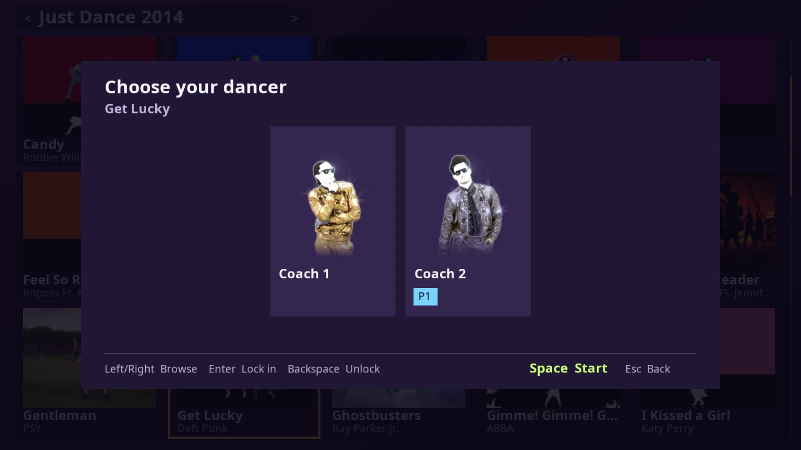

Wii rhythm games on Linux
Just Dance Couch
Bring your Just Dance Wii collection to your Linux PC. Pick a song, grab a Wii Remote and follow the original choreography.
Unofficial fan project. Build locally with your own disc backups.

Inside the launcher
From song picker to dance floor


Find your next song
Switch editions and browse songs alphabetically. Listen to a preview and watch the coach where video is available. Start a routine straight from the grid and press HOME to return.


Pick a dancer with friends
Connect up to four Wii Remotes for the original motion scoring. On supported multi-coach routines, each player can choose a dancer before the music starts.
Disc library
18 supported
Wii editions
Match the region and revision of your disc before building. Most use USA revision 0. Just Dance 3 uses USA revision 1, and Just Dance 2020 uses Europe revision 0.
Check disc IDs and hashes- Original series
- Just Dance, Just Dance 2, Just Dance 3 and Just Dance 4
- Annual editions
- Just Dance 2014, 2015, 2016, 2017, 2018, 2019 and 2020
- Compilations
- Just Dance Summer Party and Just Dance Greatest Hits
- Kids & Disney
- Just Dance Kids, Kids 2, Kids 2014, Disney Party and Disney Party 2
Getting started
Set up your Linux PC
System requirements
- Linux desktop with an x86-64-v3 processor (AVX2 and FMA) and a working Vulkan graphics driver.
- Python 3.12+, Clang, Rust 1.85+ with Cargo, FFmpeg and the build packages in the setup guide.
- Several gigabytes of temporary build space and a supported ISO, RVZ or WBFS disc backup.
Confirmed on Bazzite 44.
Get the source and tools
Download and unzip the source, then open a terminal in the extracted folder. Install the build dependencies for your distribution. The guide includes a Debian 13 package list.
Build a game and its picker
This example uses Just Dance 2014 (USA, revision 0). Replace the image path with your backup. For another edition, change the disc ID too.
python3 -B pilot.py build --disc SJOE41 \ --image "/path/to/Just Dance 2014.rvz" python3 -B pilot.py couchLaunch your first song
Try the song picker with the arrow keys and Enter. For motion scoring, follow the Wii Remote pairing guide.
cache="${XDG_CACHE_HOME:-$HOME/.cache}" "$cache/just-dance-couch/bin/just-dance-couch" --loopback
FAQ
Before you play
Can I play Just Dance on PC without Dolphin?
Yes, on a compatible Linux PC. Just Dance Couch uses Wii Recomp to translate the Wii game code from your own disc backup into a program that runs on your computer. The launcher starts each routine directly.
Can I play Just Dance offline?
The first build needs internet access to fetch tools and runtime sources. After setup, you can play offline with local disc images. Keep the original images accessible during play. If they live on a network share, you still need a connection to that share.
How do I use a Wii Remote on PC?
For direct pairing, attach a Nintendo Wii Bluetooth module (USB ID 057e:0305), grant your user access, then start the launcher with --usb-wii. Press the red SYNC button inside each remote. A remote paired through Linux BlueZ can also work with a readable and writable hidraw device.
Does the download include games or songs?
The free download contains the launcher source. Supply backups of Wii discs you own. You can also import your own Wii add-ons for the supported USA editions of Just Dance 2, 3, 4, 2014 and 2015.